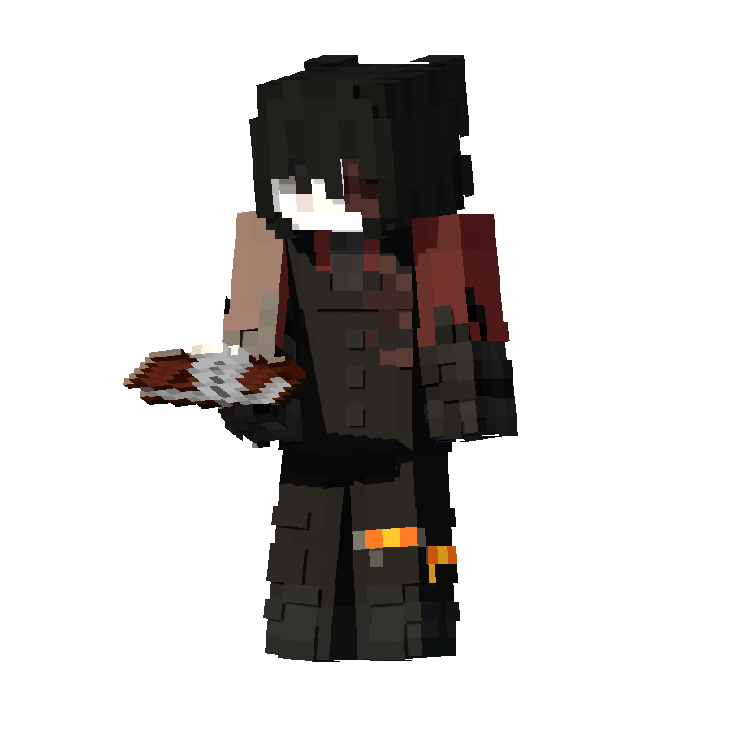
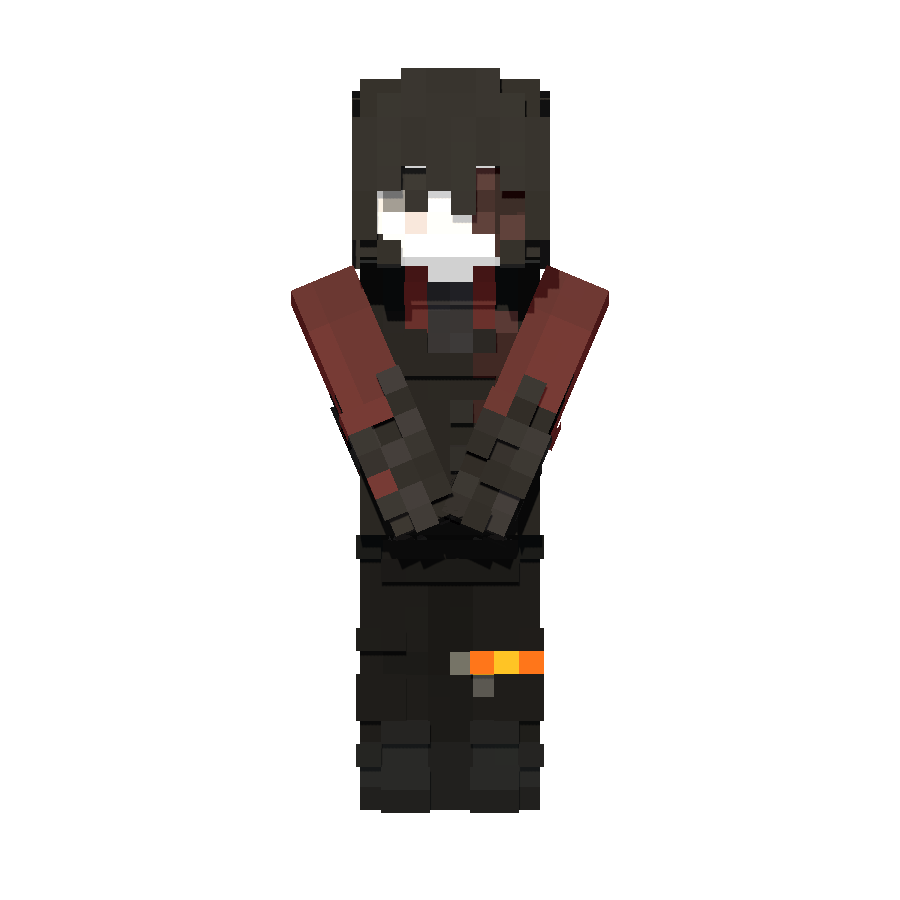
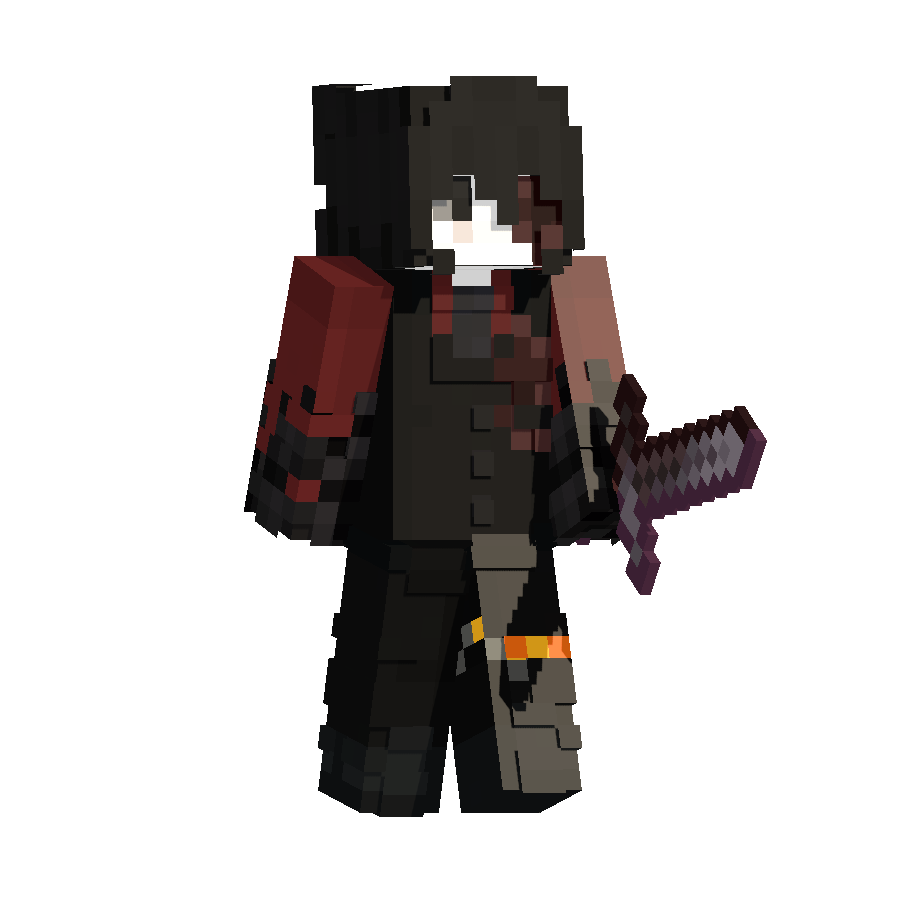

Приватный Minecraft SMP
Мир без вайпов, где история появляется не по сценарию,
а из решений и конфликтов самих игроков.
Fabric · 1.21.9 · Java Edition
Как попасть на сервер?
Подайте заявку

Расскажите о себе и своих планах на сервер.
Заявки подаются через Discord и рассматриваются вручную.
Дождитесь одобрения
Важно, чтобы новые игроки подходили по настрою и интересам.
Начните игру

После одобрения вы получите доступ к серверу
и сможете начать игру в общем мире.
Слои реальности мира Q-Verse
Слои реальности — это нестабильные пласты мира, существующие параллельно основной реальности.
Они подчиняются иным законам генерации, навигации и выживания.
Скалковая Бездна
Тип слоя: заражённый / враждебный
Статус: высокоопасный
Скалковая Бездна — слой реальности, полностью поглощённый скалком. Он считается результатом неконтролируемого распространения древней формы жизни, реагирующей на звук, движение и присутствие живых существ.
Поверхность и недра слоя покрыты скалковыми структурами, а сам мир постоянно «слушает» происходящее внутри него.
Особенности
- Повсеместное распространение скалка
- Высокая концентрация Варденов
- Ограниченная видимость и ориентация
- Ценный лут в сундуках и структурах
Доступ
- Только через Резонансный камень
- Прямые порталы отсутствуют
Примечание: Скалковая Бездна не предназначена для постоянного пребывания. Шум и беспечность здесь почти всегда заканчиваются гибелью.
Возвышенный Слой
Возвышенный Слой представляет собой отражение Верхнего мира, зафиксированное до Великого Раскола (эпоха до 1.18).
Ландшафт здесь подчиняется старым законам формирования реальности, что приводит к резким перепадам высот и экстремальной геометрии мира.
Особенности
- Экстремальная вертикальность рельефа
- Генерация старого образца (без современных пещер)
- Повышенный риск падений
- Сложная навигация
Доступ
- Через Портал Возвышенного Слоя
- Подробная активация описана в вики
Примечание: Слой не рекомендуется для новичков и плохо подходит для постоянных поселений.
Первозданный Слой
Первозданный Слой — это фрагмент реальности, застывший в одной из ранних форм мироздания (Beta 1.7.3).
Он отражает эпоху, когда структура мира ещё не была стабилизирована, а границы пространства могли нарушаться.
Особенности
- Старая генерация ландшафта
- Возможные аномалии рельефа
- Потенциальное появление Далёких Земель
Доступ
- Через Первозданный портал
- Подробная активация описана в вики
Примечание: Слой нестабилен и плохо предсказуем. Используется преимущественно для временных операций.